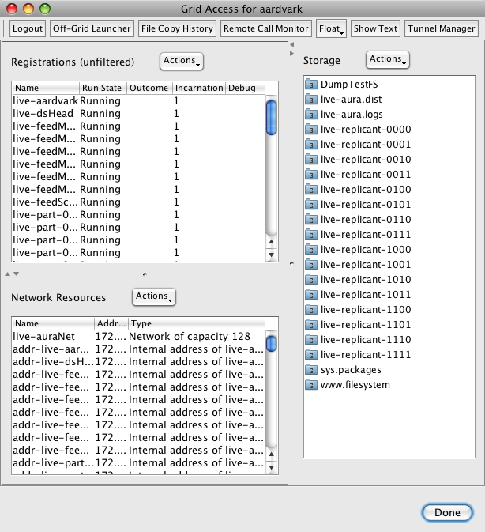

How to build a web-scale recommender
Building a system that is ready to collect so much data and process it can be a challenge. It is certainly a challenge for Project Aura. We want to build a system from the ground up that is ready for all of this data. Building such a web scale system that is highly reliable, fault tolerant and allows us to easily expand our computing capacity without re-architecting the system is not easy. But luckily we have a secret weapon that makes it easy (well, easier) to build a web-scale recommender. That secret weapon is Project Caroline.
Project Caroline is a research program developing a horizontally scalable platform for the development and deployment of Internet services. The platform comprises a programmatically configurable pool of virtualized compute, storage, and networking resources. With Project Caroline we can develop services rapidly, deploy frequently, and automatically expand or contract our use of platform resources to match changing runtime demands. In some ways, it is like Amazon's EC2 - in that allows for elastic computing across a number of networked computers, but Project Caroline works at a higher level - instead of dealing with linux images - you work with grid resources such as file systems, databases and virtualized containers for processes. It is really quite easy and flexible to use. Rich Zippel describes Project Caroline in his blog as: a really cool platform that allows you to programmatically control all of the infrastructure resources you might need in building a horizontally scaled system. You can allocate and configure databases, file systems, private networks (VLAN's), load balancers, and a lot more, all dynamically, which makes it easy to flex the resources your application uses up and down as required."
Project Aura consists of a set of loosely coupled components that use Jini for service discovery and RMI for IPC. The heart of the system is a distributed datastore that allows us to spread our taste data and the computation associated with the data over a number of compute resources. Feeding this datastore are a set of webcrawlers and on top of this sea of components we have a set of web services and web apps for communicating with the outside world. Getting this system to run on a local set of computers in the lab was a daunting task - with all the typical troubles of custom startup scripts, missing environment variables, processes registering with the wrong RMI registry, etc. All the typical things that can go wrong when trying to get a lots of computers working together to solve a single problem. Based upon this, I really thought we were going to have lots of problems getting this all running on Project Caroline - but instead it was a straightforward, process. In about a day, Jeff was able to get all of Project Aura running on Project Caroline.
I was worried that once we started to run on the Project Caroline grid, we would lose some of ability to interact with our running system. I was worried that we wouldn't be able to monitor our system, look at log files, restart individual components, or tweak a configuration - but that is not the case. Project Caroline has a grid accessor tool lets us take total control of the grid-based Project Aura. We can control processes, configure the network, interact with the filesystem (we can even use webdav to 'mount' the Project Aura filesystem on a local machine). Interacting with Project Aura when it is running on the grid is easier than when it is running locally. All the control is via a single interface - its very nice.

Now that we have Project Aura running on top of Project Caroline - I'm getting used to the idea of having 60 web crawling threads feeding a 16-way datastore that is being continually indexed by our search engine - and all of this is running across some number of processors - I don't really know how many, and I don't really care
I'm really excited about Project Caroline - this seems to be the right answer to the question that plagues anyone who is developing what they hope will become the next YouTube - How do you build and deploy a system that is going to scale up if and when you get really popular?